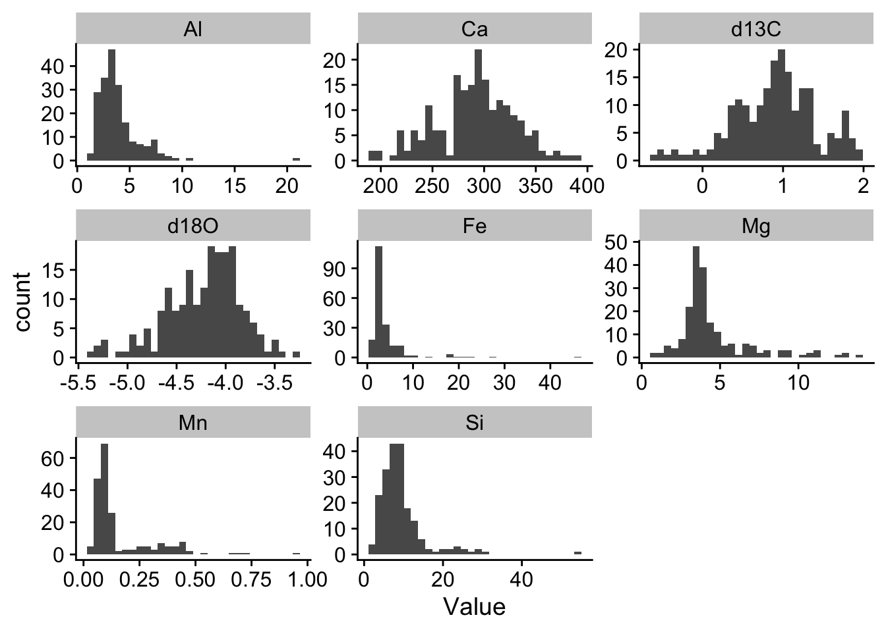
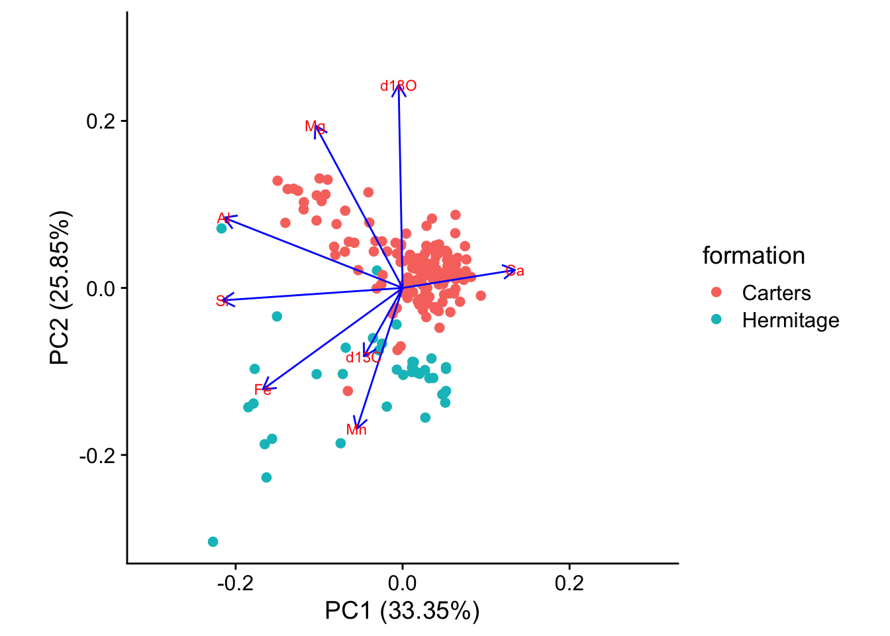

library(tidyverse)
library(here)
library(ggfortify)
library(cowplot)11 Ordination
11.1 Principal Components Analysis
11.1.1 Motivation
For this exercise we rely heavily on
Holland, S. M. (2019). Principal Components Analysis (PCA). http://strata.uga.edu/8370/handouts/pcaTutorial.pdf
See also
Shlens, J. (2014). A Tutorial on Principal Component Analysis. https://doi.org/10.1.1.115.3503
Before we do anything else, let’s load the packages we are going to use, just like we always do:
This data set has geochemical analyses of 200 limestone samples, including the major elements Al, Ca, Fe, K, Mg, Mn, and Si, stable isotope ratios of carbon and oxygen (d13C and d18O). It also records the stratigraphic position of the samples (ie, the depth beneath the surface).
This data set is available from Steven Holland’s website, and our filepath to it is just the url of the file:
filepath<-"http://strata.uga.edu/8370/data/NashvilleCarbonates.csv"
purdin<-read_csv(filepath, show_col_types = FALSE)
glimpse(purdin)Rows: 200
Columns: 10
$ ...1 <chr> "Ae", "Ad", "Ac", "Ab", "Aa", "A1", "A2", "A3", "A4", "A…
$ StratPosition <dbl> 35.080, 34.745, 34.660, 34.555, 34.285, 34.150, 34.050, …
$ d13C <dbl> 1.95, 1.82, 1.91, 0.93, -0.34, 0.46, 0.55, 0.86, 0.82, 0…
$ d18O <dbl> -4.66, -4.57, -4.77, -4.58, -4.54, -3.86, -3.94, -4.10, …
$ Al <dbl> 1.49, 2.73, 4.26, 4.69, 4.80, 3.89, 3.11, 3.35, 2.71, 7.…
$ Ca <dbl> 297.16, 275.89, 328.11, 329.66, 285.67, 346.72, 291.68, …
$ Fe <dbl> 1.52, 2.70, 3.13, 9.11, 3.46, 3.79, 3.02, 3.26, 2.69, 2.…
$ Mg <dbl> 2.22, 2.84, 3.12, 2.88, 3.69, 8.77, 5.46, 5.69, 3.89, 4.…
$ Mn <dbl> 0.34, 0.33, 0.40, 0.47, 0.45, 0.32, 0.21, 0.11, 0.10, 0.…
$ Si <dbl> 8.61, 7.32, 9.65, 23.07, 9.97, 7.98, 6.91, 7.50, 5.79, 2…#view(purdin)As we are most interested in how the geo-chemical composition varies, we will pull those variables (columns 2–10) off into a separate data frame called geochem for our analysis
geochem <- purdin |>
select(d13C:Si) # means select all columns from d1C to Si, inclusive.
glimpse(geochem)Rows: 200
Columns: 8
$ d13C <dbl> 1.95, 1.82, 1.91, 0.93, -0.34, 0.46, 0.55, 0.86, 0.82, 0.91, 0.86…
$ d18O <dbl> -4.66, -4.57, -4.77, -4.58, -4.54, -3.86, -3.94, -4.10, -4.23, -4…
$ Al <dbl> 1.49, 2.73, 4.26, 4.69, 4.80, 3.89, 3.11, 3.35, 2.71, 7.33, 3.50,…
$ Ca <dbl> 297.16, 275.89, 328.11, 329.66, 285.67, 346.72, 291.68, 295.68, 3…
$ Fe <dbl> 1.52, 2.70, 3.13, 9.11, 3.46, 3.79, 3.02, 3.26, 2.69, 2.88, 2.89,…
$ Mg <dbl> 2.22, 2.84, 3.12, 2.88, 3.69, 8.77, 5.46, 5.69, 3.89, 4.70, 3.28,…
$ Mn <dbl> 0.34, 0.33, 0.40, 0.47, 0.45, 0.32, 0.21, 0.11, 0.10, 0.12, 0.09,…
$ Si <dbl> 8.61, 7.32, 9.65, 23.07, 9.97, 7.98, 6.91, 7.50, 5.79, 22.11, 7.7…Thinking ahead to how we want to do an exploratory plot of these measurements, and possibly summaries, grouping by variable, we realise that this will be difficult unless we ‘tidy’ the data. What we mean by this is that we could think of this data set as having one ‘factor’ = geochemical variable, within which there are many levels = d13C, d18O, Al, Ca etc. If the data were tidy, then there would be just one column for the names of all these levels, and another column for their values. At the moment the data set is not tidy as the levels of the variable are spread across several columns, but we can make it so by using the pivot_longer() function:
geochem_tidy<-geochem |>
pivot_longer(1:8,names_to="Variable",values_to="Value")
glimpse(geochem_tidy)Rows: 1,600
Columns: 2
$ Variable <chr> "d13C", "d18O", "Al", "Ca", "Fe", "Mg", "Mn", "Si", "d13C", "…
$ Value <dbl> 1.95, -4.66, 1.49, 297.16, 1.52, 2.22, 0.34, 8.61, 1.82, -4.5…Do you see what that has done? We started with a short, fat data set and have ended up with a long, thin one.
Now we have tidied the data, we can easily look at it for each level:
geochem_tidy |>
ggplot(aes(x=Value)) +
geom_histogram() +
facet_wrap(~Variable,scales="free") +
theme_cowplot()
Note the very different scales for each of these variables, in both the x and y directions.
Several of the major elements among these (Al, Fe, Mg, Mn, Si) seem to be right-skewed, while the two isotopic ratio variables (d18O and d13C) are left skewed to a lesser degree.
For PCA to work, the data need to be normally distributed, just like in all the variations of the linear model (regression, t-test, ANOVA, Pearson correlation). To make this more approximately the case for this data set, we can transform them using a log10 transformation.
geochem_trans <- geochem |> mutate(across(c("Al","Si"),log10))Other restrictions on the data apply to the use of PCA just as in linear model analyses. In particular, outliers should be removed since they will have a disproportionate influence on the outcome.
Now we create a PCA model from the transformed data. We scale the data so that all variables are given equal weight. If we did not do this, then the variables for which values are very large (Ca, in this case) would dominate the analysis.
pca <- prcomp(geochem, scale.=TRUE)From this, we get these outputs:
# The variance vector shows how much of the variance in the data is explained by each PC.
variance <- (pca$sdev)^2
vpc <-variance/sum(variance) * 100
cpc <- cumsum(vpc)
scree<-tibble(PC=seq(1:length(pca$sdev)),vpc=vpc,cpc=cpc)
# loadings show how much each variables contributes to each PC
loadings <- pca$rotation
rownames(loadings) <- colnames(geochem)
# These show the values each data point has for each of the principal components
scores <- pca$x11.1.2 What does PCA do?
First think of each of the samples in this study as being characterised by eight different variables, the concentrations of the the eight elements and isotope ratios that were measured in each of them. We can think of each of these variables as representing an axis in 8 dimensional space (don’t think too long over this or your head might pop!). If we could draw this space (we can’t!) then each sample would be at a point specified by the its 8 values of these variables, just as a point on a 2 dimensional grpah might be specified by its coordinates, say (3,2), meaning the point where the vaiable x had the value 3 and the variable y hadthe value 2. The whole data set would be a cloud of points in this space.
11.1.3 Scree Plot
A scree plot help us see how the variance in the data is distributed among the principal components. We see that each successive PC explains less variance than the one before. We can use this plot to help us decide how many PCs we need to retain. The horizontal line in the plot shows the total variance divided by the number of PCs. Hence we could decide to retain only those PCs that explain more variance than this, since only they explain more than one variable’s worth of data.
### Basic scree plot
scree |>
ggplot(aes(x=PC,y=vpc)) +
geom_point() +
geom_line() +
geom_hline(yintercept=mean(scree$vpc),linetype="dashed",colour="red") +
labs(x="Principal component",
y="% variance explained") +
theme_cowplot()
scree# A tibble: 8 × 3
PC vpc cpc
<int> <dbl> <dbl>
1 1 33.3 33.3
2 2 25.9 59.2
3 3 13.4 72.6
4 4 11.4 83.9
5 5 7.32 91.3
6 6 4.74 96.0
7 7 3.35 99.4
8 8 0.645 100 In this data set we see that there is a big drop off in variance explained on going from the second to the third PC but that the third nevertheless just about accounts for more than one variables worth of variance and so may be worth retaining.
11.1.4 Loadings
Let’s look at the loadings of the first three PCs.
From this we can see which variables have high loadings, positive or negative, on each principal component, and so contribute most to it. This helps us work out what each principal component represents. A positive loading means that the variable correlate positively with the principal component, whereas a negative loading means that it correlates negatively.
round(loadings, 2)[ , 1:3] # this means give me all the row,and columns 1 to 3, rounded to 2 decimal places. PC1 PC2 PC3
d13C -0.12 -0.21 0.70
d18O -0.01 0.62 0.04
Al -0.54 0.21 0.10
Ca 0.34 0.05 0.35
Fe -0.43 -0.31 -0.31
Mg -0.27 0.49 0.33
Mn -0.14 -0.43 0.42
Si -0.55 -0.04 -0.06Here we see that Al, Fe and Si all have strong negative loading on axis 1, meaning that high values of PC1 correspond to low values of the variables. On axis 2 we see that d180 has a strong positive loading while Mn has a strong negative loading. Thus, large values of PC2 correspond to large values of d180 and to low values of Mn.
11.1.5 Biplot
Scores and loadings are often shown together on what is known as a biplot. The autoplot() function from the package ggfortify provides a good way to do this, offering you lots of control over the details.
coord.system <- coord_fixed(ratio=1, xlim=c(-0.3,0.3),ylim=c(-0.3,0.3))
autoplot(pca, data = geochem,
alpha=0.5,
loadings = TRUE,
loadings.label = TRUE,
) +
coord.system +
theme_cowplot()
A biplot shows you which samples are similar to one another, and how the variables control that similarity. Samples that are plotted close together on the biplot are most similar, those that are far apart are least similar.
From the distribution of the data in the biplot we can identify underlying patterns. In this biplot we see a dense cluster of data in the upper-right, and a separate, more diffuse cluster towards the lower left.
It turns out too that the rock samples come from one of two layers, the Carters and the Hermitage formations, depending on whether they are above or below a major non-conformity in sediment deposition that occurs at a stratigraphic position of 34.2 m. We can colour the points in the biplot accordingly
geochem<-geochem |>
mutate(formation=ifelse(purdin$StratPosition<34.2,"Carters","Hermitage"))coord.system <- coord_fixed(ratio=1, xlim=c(-0.3,0.3),ylim=c(-0.3,0.3))
autoplot(pca, data = geochem,colour='formation',
loadings = TRUE, loadings.colour = 'blue',
loadings.label = TRUE, loadings.label.size = 3) + coord.system + theme_cowplot()
11.1.6 What to Report
When reporting a principal components analysis, always include at least these items:
A description of any data culling or data transformations that were used prior to ordination. State these in the order that they were performed.
Whether the PCA were scaled (scale.=TRUE) or not (scale.=FALSE).
A scree plot that shows the explained variance of each of the principal components and that illustrates the criteria used for selecting the number of principal components to be studied.
A table of loadings of all variables for each of the principal components that was studied. The table should highlight (e.g., with boldface) those loadings that are considered the most important for each principal component.
One or more plots of sample scores that emphasizes the interpretation of the principal components, such as color-coding samples by an external variable. It is often useful to show the vectors corresponding to the loadings on these plots